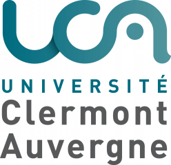
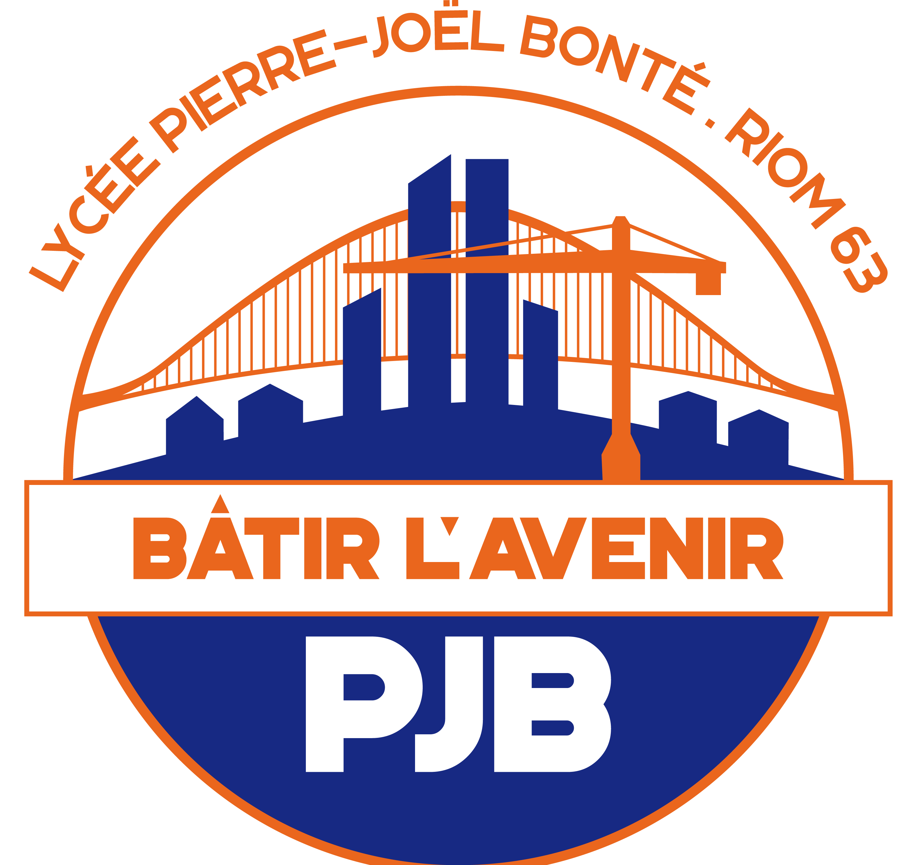
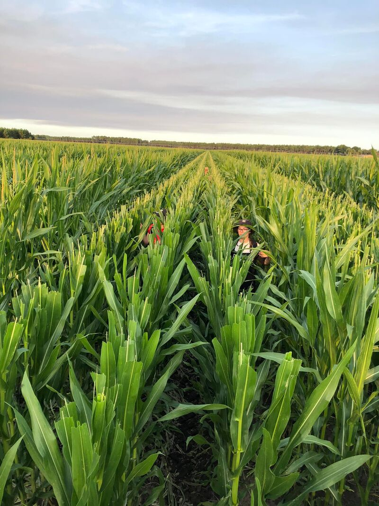
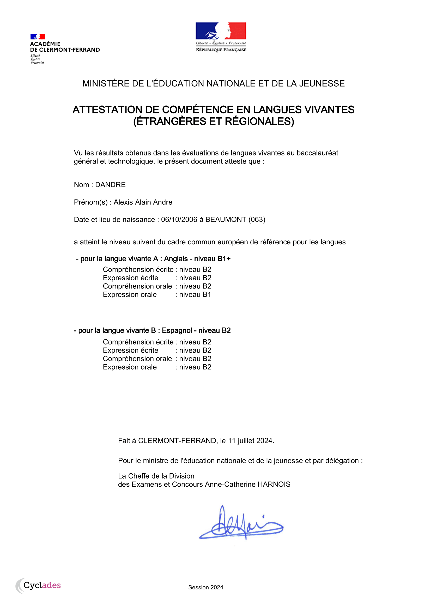
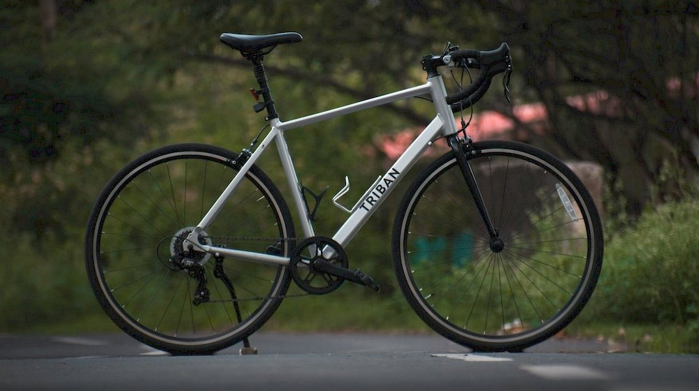
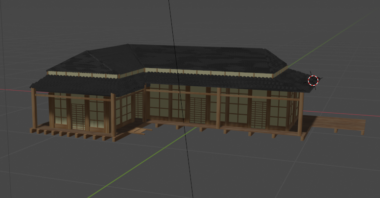

Présentation
Je suis Dandre Alexis,
Étudiant en 1ère Année du BUT Réseaux et Télécommunications
J'ai 18 ans et je viens de Saint Bonnet près Riom dans le Puy-de-Dôme (63)
Lors de ma terminale, j'ai pu découvrir l'informatique grâce à la spécialité Numérique et Sciences de l'Informatique.
J'ai notamment pu remarquer que je portais beaucoup plus d'intêret au côté physique de l'informatique (Hardware)
Je suis travailleur, discipliné et je travaille facilement en équipe.
Je recherche une alternance dans le domaine des réseaux et de la télécommunication avec un rythme de 1 mois - 1 mois et d'une durée de 2 ans à partir de Septembre 2025 .
Formation
2024-2025
IUT Clermont Auvergne, Aubière
Je suis actuellement en 1ère année et j'étudie les Réseaux et la Télécommunication

2021-2024
Lycée Pierre Joël Bonté, Riom
Je me suis orienté en filière Générale
En première, je me suis spécialisé dans les Mathématiques, les Sciences de l'Ingénieur et en Numérique et Sciences de l'Informatqiue
En terminale, j'ai choisi de garder les spécialités NSI et Mathématiques
J'ai obtenu un Baccalauréat général avec mention Bien, section Européenne Anglais

Mon Expérience
Juillet 2022
Castration de Maïs
Contexte :
Travail saisonnier réalisé durant l'été 2022.
Travail réalisé :
Avec d'autres jeunes saisonniers, guidés par un chef de rang, j'ai castré les maïs. Cela consiste à enlever manuellement les fleurs mâles de plants de maïs afin de contrôler la pollinisation lors de la production.
Compétences acquises :
Ce travail saisonnier m'a permis de collaborer avec d'autres personnes travaillant avec moi. J'ai également travaillé ma rigueur en respectant scrupuleusement des règles précises énoncées par le chef de rang. Ce travail est assez éprouvant car il s'effectue en pleine chaleur durant plusieurs heures.

Mes Compétences
Techniques
Programmation
Python
Lors de ma terminale, j'ai obtenu des compétences en Python qui m'ont permis d'obtenir la note de 17/20 au BAC
HTML/CSS
Lors de l'examen de programmation WEB de cette année j'ai dû réaliser un compte rendu des erreurs que je trouvais dans différents codes HTML/CSS. J'ai dû également proposer des solutions aux erreurs. J'ai obtenu la note de 17/20 à cet Examen, la moyenne de classe étant de 14,57.
Commande de base Linux
Lors de nos cours de Système, nous avons du éxécuter des commandes Linux afin de répondre aux demandes de notre Professeur.
De plus, nous avons dû rédiger des petits scripts à partir des commandes apprises plus tôt. J'ai donc pu développer mes compétences en Linux, ce qui ma permis d'obtenir la note de 14/20 avec une moyenne de classe à 12,5
Réseaux
Configuration d'un réseau Informatique
J'ai pu apprendre les bases lors de nombreux TP et TD sur Cisco Packet Tracer.
J'ai ensuite testé ces connaissances lors de plusieurs Travaux Pratiques sur machines. J'ai notamment appris à donner le bon adressage sur un réseau, à permettre à deux réseaux de communiquer via une passerelle(routeur) et à tester la connexion entre plusieurs machines.
Télécommunication
Création et Analyse d'un Signal
Lors de nos Travaux Pratiques de Télécommunication, j'ai pu me familiariser avec l'utilisation d'un générateur de signal afin de créer les signaux que nous voulions analyser.
Nous avons ensuite analysé ces signaux grâce à un oscilloscope.
Humaines
Esprit d'équipe
La pratique du football m'a permis de développer mon esprit d'équipe.
Lors de l'année 2023, ma cohésion avec mes coéquipiers nous a permis de passer de la division 3 à 1
Assiduité
Je suis toujours présent en cours, cela me permet de faciliter mon apprentissage et m'aide à obtenir de bonnes notes.
De plus, je suis toujours présent à mes entrainements de foot, quelque soit la météo. Cela me permet d'améliorer mon niveau; cela permet également à mon coach et mes équipiers de savoir qu'ils peuvent compter sur moi.

Rigueur
Je prépare toujours mon travail en avance afin de ne pas être submergé à la dernière minute.
De plus, j'aime bien que mon travail soit bien fait en répondant au mieux aux attentes.
Linguistique
Anglais Niveau B1
J'ai obtenu la mention "Section Européenne Anglais" au Baccalauréat
J'ai été certifié d'un niveau d'anglais B1 par Cambridge English

Espagnol Niveau B2
Je me suis inscrit dès la 6e en classe "Bilangue Anglais-Espagnol". Je suis déjà allé en Espagne, ce qui m'a permis de pratiquer la langue avec des natifs.
Mes Projets
SAE 14
Création du Portfolio
Contexte:
Lors de la SAE 14, j'ai réalisé mon propre Portfolio.
Travail à réaliser:
Nous avons dû réaliser un portfolio sous forme de page internet. Pour cela, j'ai d'abord créé la base de ma page en HTML puis je l'ai mise en forme grâce au CSS.
Résultat:
La création de mon Portfolio m'a permis de développer mes compétences dans les langages HTML et CSS.
En savoir plus
Projet NSI
Développement d'un jeu en Python
Contexte:
En classe de Terminale, nous devions réaliser l'application de notre choix en Python par groupe de 4
Travail à réaliser:
Nous nous sommes fixés comme objectif de créer un Shoot'em Up.
Résultat:
Lors de ce projet, j'ai réalisé un jeu simple complétement fonctionnel en Python grâce à de la programmation orientée objets.
Nous avons entièrement créé le jeu, nous avons donc créé un menu, l'aspect graphique du jeu ainsi que l'interaction avec le joueur.
En savoir plus
Modélisation 3D
Fan fiction Harry Potter
Contexte:
Lors d'un projet de fan fiction du film Harry Potter, j'ai pu m'exercer à la modélisation 3D.
Travail à réaliser:
Nous avions pour objectif de créer un cours-métrage de 20 minutes.
Lors de ce projet, j'ai réalisé un modèle 3D du terrain de Quidditch. J'ai également pu réaliser des modèles de balais.
Résultat:
Malheureusement le projet n'a pas abouti mais il m'a permis de m'améliorer dans le domaine de la 3D.
En savoir plus
Hobbies
Sport
- Football en club
- Vélo en loisir
Je pratique le football en club depuis mes 8 ans à hauteur de 3 fois par semaine. Cette pratique m'a permis de développer mon esprit d'équipe.

Je pratique également le vélo de route durant mon temps libre. J'essaie de tenir un rythme de 3 sorties par mois.

Divers
- Jeux Vidéo
- Modélisation 3D
Pour me détendre, j'aime également jouer aux jeux vidéos seul ou entre amis. J'aime beaucoup les jeux qui évoquent l'Histoire, les voyages ou la mythologie. Mon jeu préféré est Ghost Of Tsushima, qui m'a permis de me plonger dans le Japon Féodal.
Lors de mon temps libre, j'aime faire de la modélisation 3D. Cela me permet de laisser place à mon imagination.

Mon CV

Me Contacter
Mail :
alexis.dandre@etu.uca.fr
Réseaux sociaux :